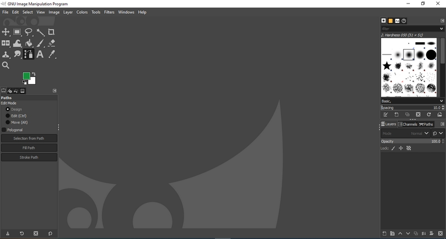

O GIMP é um editor de imagens gratuito e de código aberto, ou seja, qualquer um pode alterar o código de acordo com sua preferência, disponível para diversas plataformas incluindo Windows, Linux e Mac, que conta com uma grande comunidade e uma enorme variedade de plugins. Você pode baixar o GIMP na página gimp.org.
Área de Trabalho do GIMP:
O GIMP possui uma curva de aprendizado extremamente baixa, podendo um iniciante dominá-lo completamente em apenas algumas horas de uso, no entanto não deixa a desejar em nada. Ao iniciarmos, encontraremos o espaço de trabalho ao centro onde visualizaremos os arquivos que abrirmos, ao lado direito as Janelas de Encaixe e ao lado esquerdo as Barras de Ferramentas. Veremos a partir de agora as ferramentas essenciais e o que podemos fazer com elas.